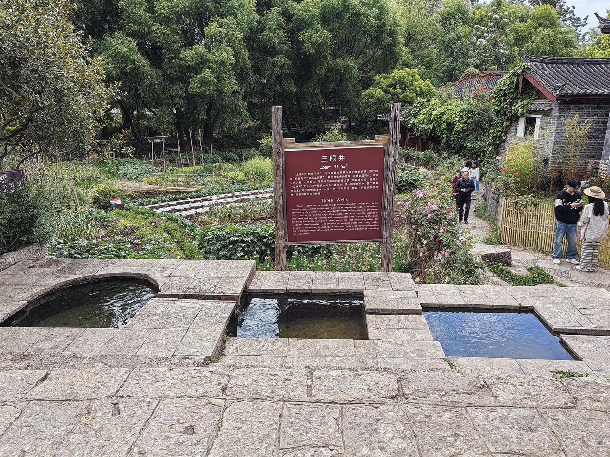
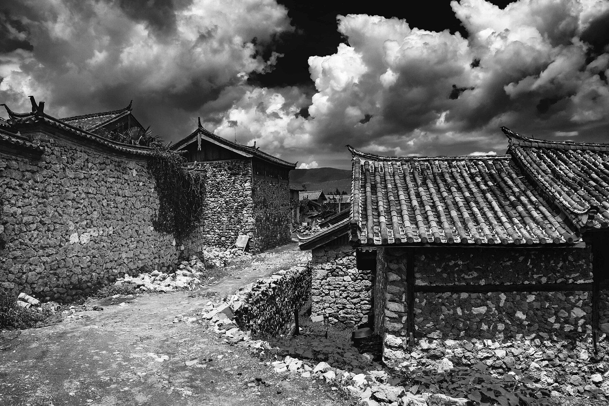

东巴文 森究鲁究
「木石上的痕记」，约产生于公元 11 世纪前，图画象形文字，被《光明日报》（2010）称为「世界上至今唯一活着的象形文字」。未收入 Unicode（2008 年中国提案 N3425 因字数口径争议搁置）。
纳西族主要聚居于滇、川、藏交界的横断山区，绝大部分在丽江市。族源主流观点为「古羌南迁说」——远古西北河湟地带的古羌人南迁至岷江上游，再经雅砻江流域西迁至金沙江上游两岸；木家桥出土的「丽江人」化石则提示南迁者与土著融合的可能。1954 年经国务院批准统一族称为「纳西族」。
纳西语属汉藏语系藏缅语族（彝语支，系属学界尚有讨论），分西部方言（丽江坝区）与东部方言（永宁坝区）。UNESCO《濒危语言图谱》（2010 年版）将纳西语列为「脆弱（vulnerable）」级——濒危程度最轻的一级，但城区儿童母语转用汉语的趋势已十分明显；其支系语言（拉热、玛丽玛萨等）濒危程度更高。


东巴教是纳西族的本土宗教，融自然崇拜与祖先崇拜于一体；祭司称「东巴」，纳西语意为「智者」——平时务农，受请时主持祭天、祭署（自然神）、丧葬超度、禳灾占卜等仪式，是东巴文化的主要创造者与传承者。

边界说明：纳西族手工造纸技艺（东巴纸）同为国家级非遗，但其申报地为迪庆州香格里拉市（三坝白地村），故未列入丽江市 8 项之内——丽江古城的东巴纸坊为旅游体验业态。




「木氏居此二千载，宫室之丽，拟于王者。」